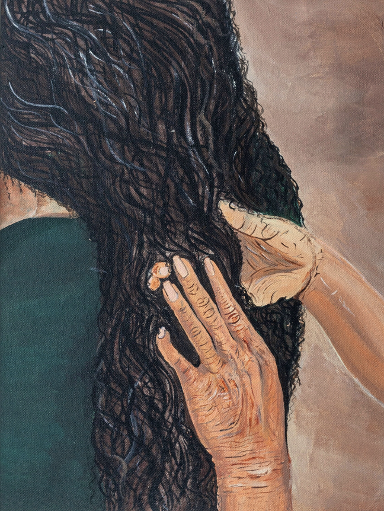
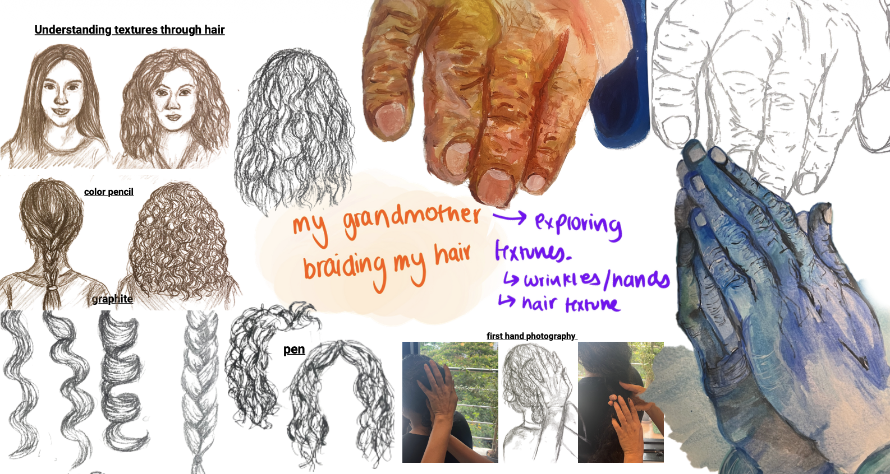
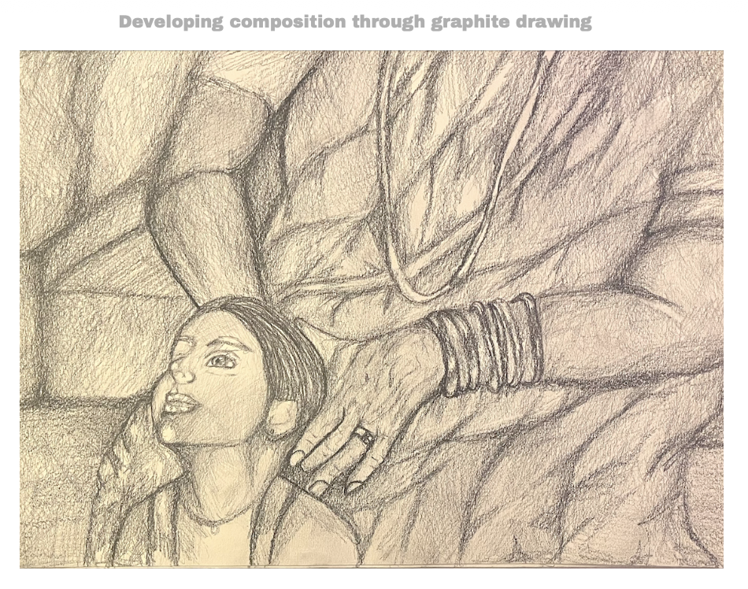

PROCESS


Braided by Generations
Acrylic on canvas
11.69 in x 16.52 in
Childhood memories form a strong source of inspiration for me. In this painting, I visually depict a childhood memory of my grandmother braiding my hair. The lines and wrinkles in my grandmother's hands and the thick curls of my hair capture the intimate connection we shared in this quiet act of care.
Through this piece I explore the warmth and comfort of generational bonds, showing how simple everyday traditions carry an unspoken tenderness that connects families across time. The work reflects how acts of care are not merely physical gestures, but moments through which identity, memory, and cultural continuity are passed from one generation to the next.